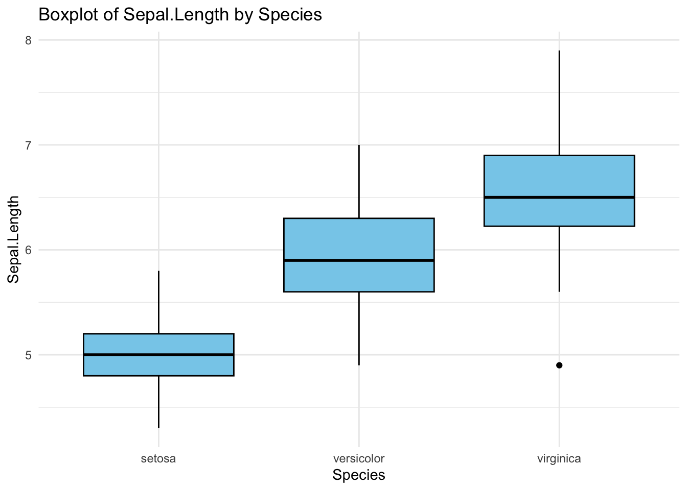
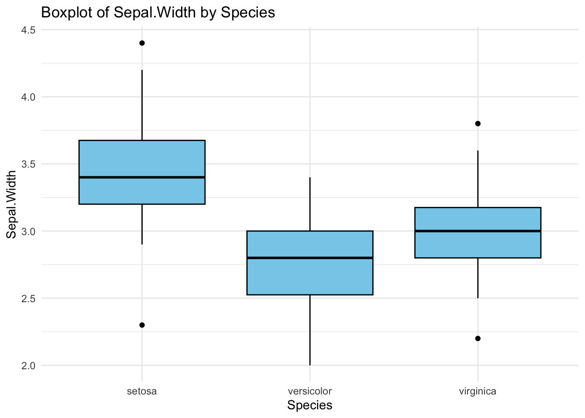
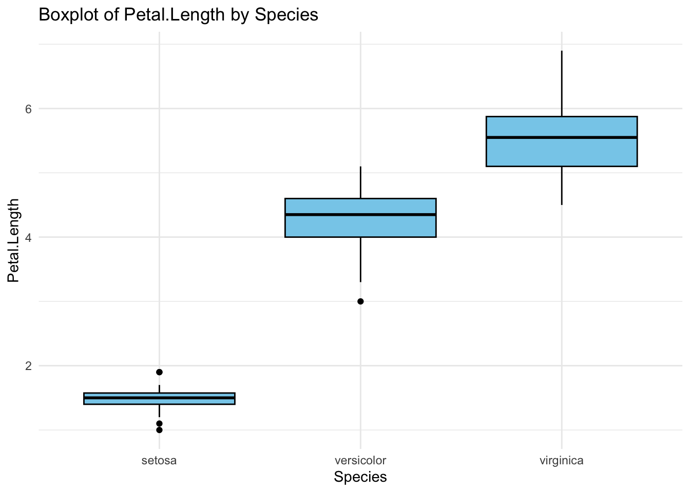
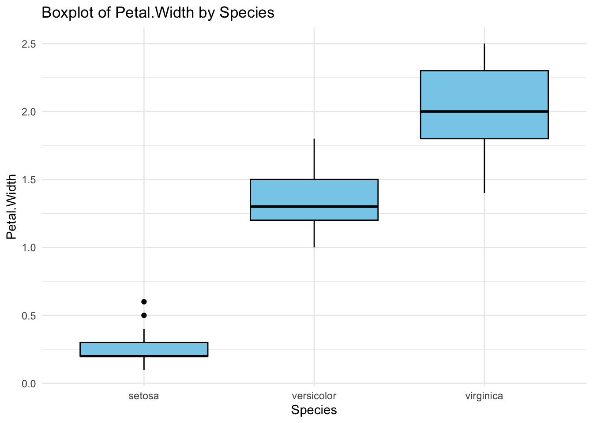
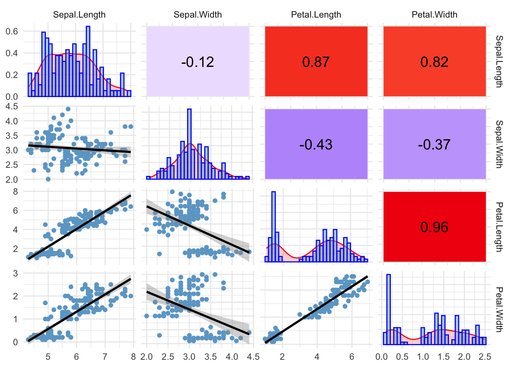
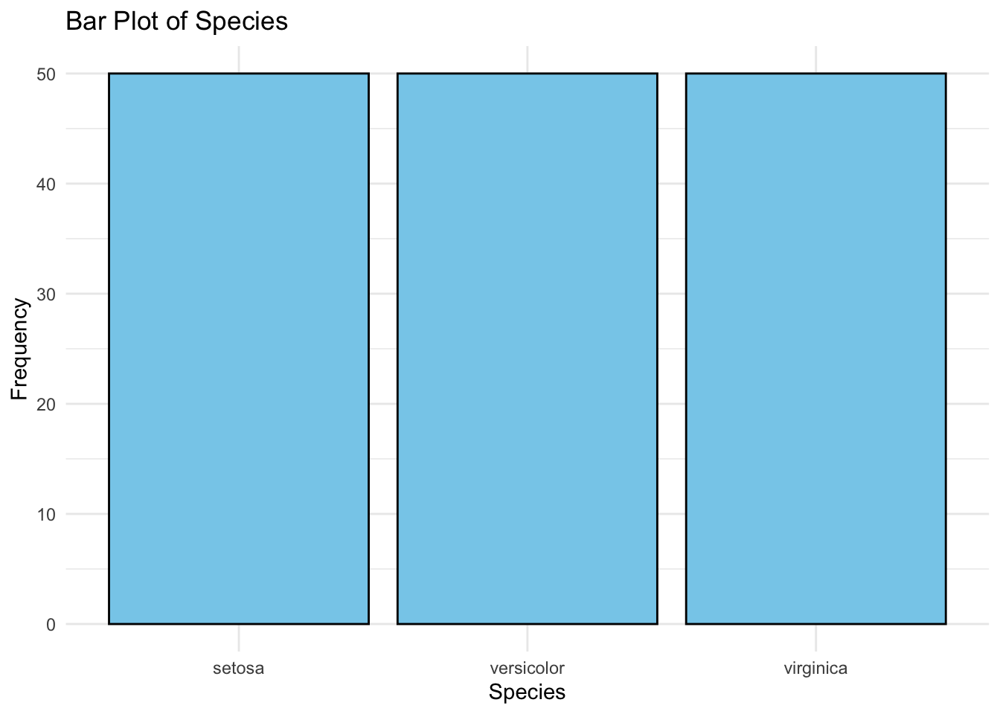
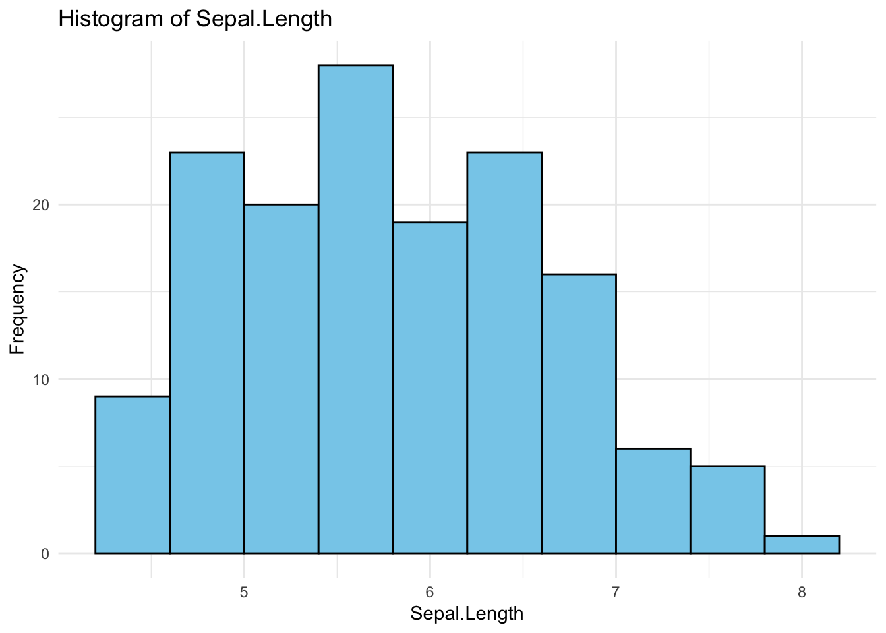
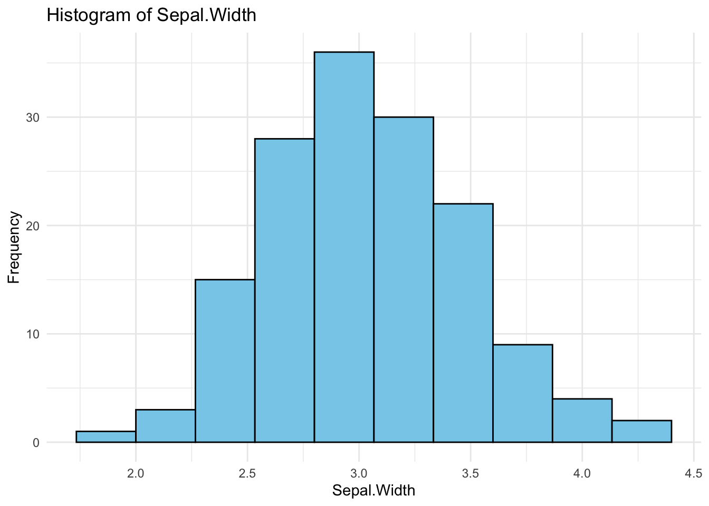
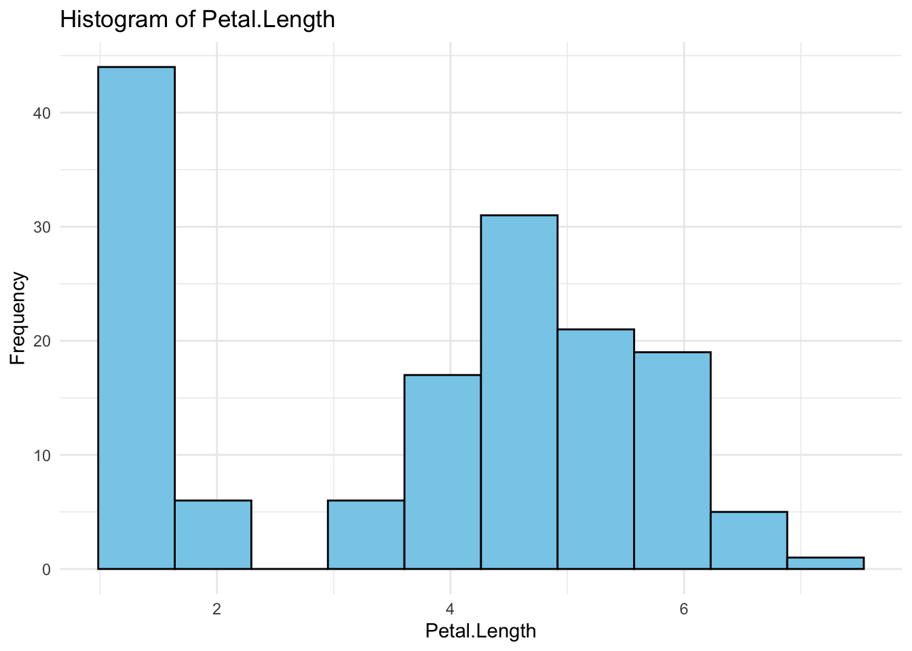
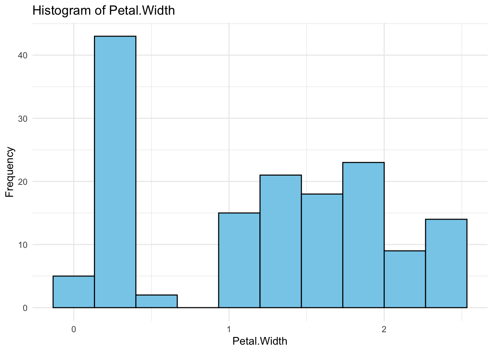

Designed to simplify the initial phases of data exploration while enhancing the visual appeal of graphs. Currently, it offers three essential functions listed below. I am also actively developing a fourth to streamline data type conversions.
InquisitR
boxplotR
The function generates detailed boxplots for various combinations of factor and numeric variables within your dataset
Code
library(ggplot2)boxplotR<-function(data){if(!is.data.frame(data)){stop("Input must be a data frame.")}# Check if input contains only one columnif(length(data)==1&&is.vector(data)){stop("Input must be a data frame, not a single vector or column.")}# Check if data frame contains at least one numeric or categorical variablecontains_valid_vars<-any(sapply(data, function(x)is.factor(x)))if(!contains_valid_vars){stop("Data frame must contain at least one numeric and one factor variable.")}factor_vars<-names(data)[sapply(data, is.factor)]# Get factor variable namesnumeric_vars<-names(data)[sapply(data, is.numeric)]# Get numeric variable namesplots<-list()# Loop through each combination of factor and numeric variablefor(xinfactor_vars){for(yinnumeric_vars){plot_title<-paste("Boxplot of", y, "by", x)plot<-ggplot(data, aes_string(x =x, y =y))+geom_boxplot(fill ="skyblue", color ="black")+labs(title =plot_title)+theme_minimal()plots[[paste(x, y, sep ="_")]]<-plot}}return(plots)}data(iris)boxplotR(iris)
$Species_Sepal.Length

$Species_Sepal.Width

$Species_Petal.Length

$Species_Petal.Width

correlationR
The function creates customizable pairwise plot matrices using GGally, allowing you to tailor plots for upper triangles, lower triangles, and diagonal views.
Code
library(GGally)library(ggplot2)library(dplyr)upperFn<-function(data, mapping, ...){x<-eval_data_col(data, mapping$x)y<-eval_data_col(data, mapping$y)cor_value<-round(cor(x, y), 2)cor_label<-format(cor_value, nsmall =2)data.frame(x =1, y =1, cor =cor_value)%>%ggplot(aes(x =x, y =y))+geom_tile(aes(fill =cor), color ="white", width =1, height =1)+geom_text(aes(label =cor_label), color ="black", size =5, vjust =0.5)+scale_fill_gradient2(low ="blue2", high ="red2", mid ="white", midpoint =0, limit =c(-1, 1), space ="Lab", name ="Correlation")+theme_void()+theme(legend.position ="none", plot.margin =unit(c(0, 0, 0, 0), "cm"))+theme_minimal()}lowerFn<-function(data, mapping, method="lm", ...){ggplot(data =data, mapping =mapping)+geom_point(colour ="skyblue3")+geom_smooth(method =method, color ="black", ...)+theme_minimal()}diagFn<-function(data, mapping, ...){ggplot(data =data, mapping =mapping)+geom_density(aes(y =..density..), colour ="red", fill ="red", alpha =0.2)+geom_histogram(aes(y =..density..), colour ="blue", fill ="skyblue3", alpha =0.5)+theme_minimal()}correlationR<-function(df){numeric_cols<-df%>%dplyr::select(where(is.numeric))%>%colnames()if(length(numeric_cols)<2){stop("The dataframe must contain at least two numeric columns.")}ggpairs(df[, numeric_cols], lower =list(continuous =wrap(lowerFn, method ="lm")), diag =list(continuous =wrap(diagFn)), upper =list(continuous =wrap(upperFn)))+theme_minimal()}data(iris)correlationR(iris)

distributionR
This function easily visualize distributions of both numeric and categorical variables, with flexible options to suit your analysis needs.
library(ggplot2)distributionR<-function(data, plot_bars=TRUE, plot_histograms=TRUE){# Check if input is a data frameif(!is.data.frame(data)){stop("Input must be a data frame.")}# Check if input contains only one columnif(length(data)==1&&is.vector(data)){stop("Input must be a data frame, not a single vector or column.")}# Check if data frame contains at least one numeric or categorical variablecontains_valid_vars<-any(sapply(data, function(x)is.numeric(x)||is.character(x)||is.factor(x)))if(!contains_valid_vars){stop("Data frame must contain at least one numeric or categorical (character/factor) variable.")}plots<-list()# Create bar plots for categorical variablesif(plot_bars){char_factor_cols<-names(data)[sapply(data, function(x)is.character(x)||is.factor(x))]for(colinchar_factor_cols){freq_table<-table(data[[col]])plot_data<-as.data.frame(freq_table)names(plot_data)<-c("Category", "Frequency")plot<-ggplot(plot_data, aes(x =Category, y =Frequency))+geom_bar(stat ="identity", fill ="skyblue", color ="black")+labs(title =paste("Bar Plot of", col), x =col, y ="Frequency")+theme(axis.text.x =element_text(angle =45, hjust =1))+theme_minimal()plots[[paste("barplot", col, sep ="_")]]<-plot}}# Create histograms for numeric variablesif(plot_histograms){numeric_vars<-names(data)[sapply(data, is.numeric)]for(varinnumeric_vars){plot<-ggplot(data, aes(x =.data[[var]]))+geom_histogram(bins =10, fill ="skyblue", color ="black")+labs(title =paste("Histogram of", var), x =var, y ="Frequency")+theme_minimal()plots[[paste("histogram", var, sep ="_")]]<-plot}}return(plots)}data(iris)distributionR(iris, plot_bars =TRUE, plot_histograms =TRUE)
$barplot_Species

$histogram_Sepal.Length

$histogram_Sepal.Width

$histogram_Petal.Length

$histogram_Petal.Width

Github link to use my package https://lnkd.in/gR2h7gKB
or just use: library(devtools) install_github(“NathanBresette/InquisitR”)